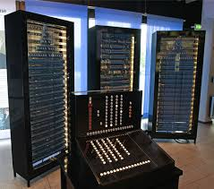

Lo Z3
Il primo computer Turing-completo basato sul sistema numerico binario
e totalmente programmabile fu lo Z3, costruito in Germania da
componenti riciclati di telefonia dal già citato Konrad Zuse,
che lo realizzò praticamente da solo, nel 1941. Lo Z3 venne poi distrutto
in un bombardamento dagli Alleati, e per molti anni ne è stata ignorata
perfino l'esistenza; di conseguenza il primato di primo computer della storia
è stato riconosciuto alla macchina statunitense "ENIAC".
